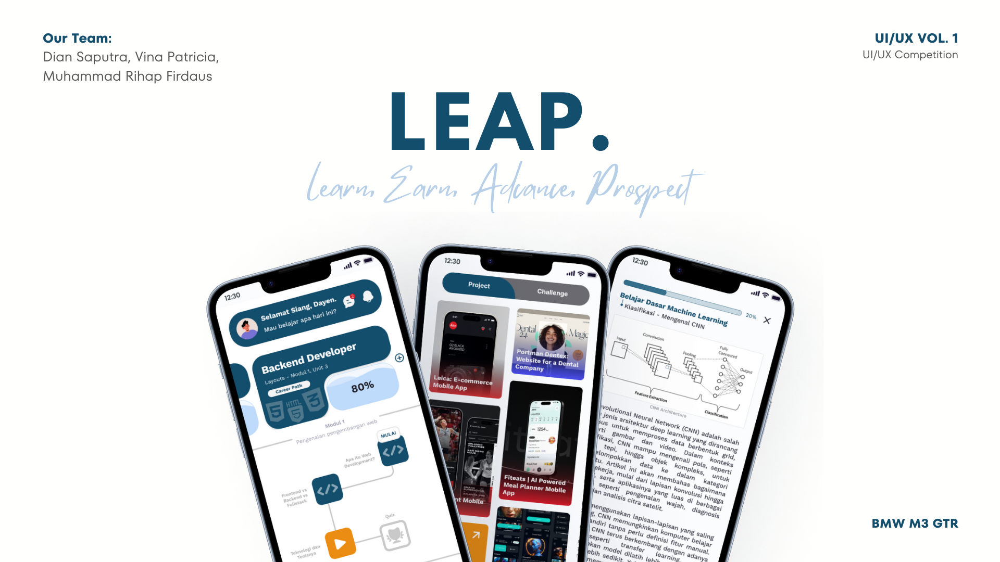
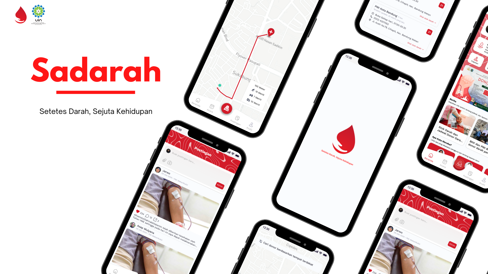

UI/UX
DESIGN

2023
Healthify App
UX research and UI design for a mobile application focused on daily health tracking, providing wellness tips, and connecting users with local gyms.
Figma
Miro
User Research

2024
LocalBrand Redesign
A complete UI overhaul for a fast-growing local fashion brand. Improved conversion rates by simplifying the checkout flow and revamping the product showcase.
Figma
Prototyping
A/B Testing